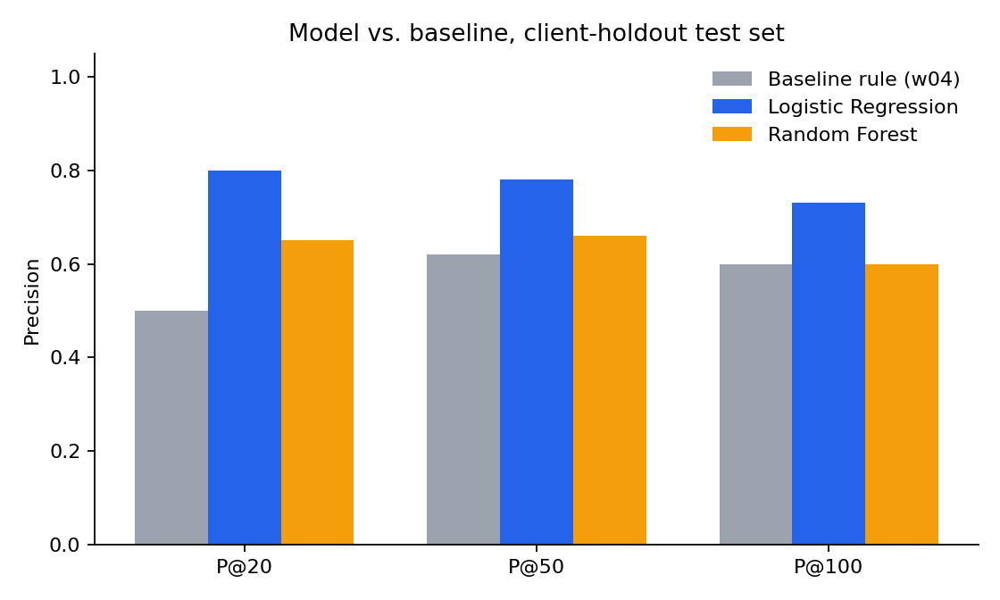
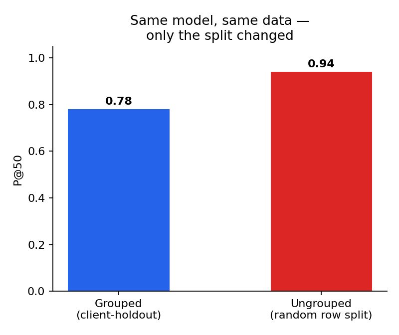

Question: given a snapshot of content pages across many clients, can a scoring model rank pages by refresh priority better than a simple two-condition staleness rule — well enough that a content team could trust the top of the list as a weekly worklist? Method: a Logistic Regression and a Random Forest were trained on 21 engagement, visibility, and metadata features, evaluated with Precision at 50 (P@50) under a strict client-holdout split, and compared against a Week-4 rule-based baseline (stale × visible × log(impressions)) on the same held-out clients. Result: Logistic Regression reached P@50 = 0.78 against the baseline's 0.56 — a 22-point lift — while a naive, ungrouped split on the same data would have overstated that figure at 0.94, a gap this study measures directly rather than assumes away. Scope: built on a 30,000-page, 32-client starter snapshot rather than the full warehouse release, a disclosed limitation, not a hidden one. Takeaway: the ranking works as a decision-support shortlist for human review, not an autonomous action trigger.
The problem: too many pages, not enough review time
A content team managing a large catalog cannot manually review every page every week. Some pages are quietly losing visibility while others hold steady or grow — but without a systematic way to sort the catalog, review time defaults to "whatever's loudest" rather than "whatever's actually declining." The simplest fix, a rule like flag anything old and popular, is cheap to compute but coarse: it treats every stale, visible page as equally worth a look, with no sense of which ones are structurally more likely to keep sliding.
This project builds a ranked refresh-priority queue: one score per page, ordered so the top of the list is the best use of a team's limited weekly review capacity. The lane is Refresh / Content Opportunity Scoring, and the target label — is_declining_label — is derived from a 30-day-vs-previous-30-day impression trend already present in the data (trend_direction == "down"). The evaluation metric is Precision at 50 (P@50): out of the top 50 pages the model surfaces, what share are actually declining? Fifty is a believable weekly batch size for a team working down a prioritized list, not an arbitrary round number.
The decision this supports is narrow and deliberately so: which ~50 pages a content team should look at first each week, out of a much larger catalog. The model's job is to make that shortlist better than "anything old and popular" — not to replace a human's judgment about any single page, and not to claim it knows why a page is declining.
What this is built on
This study uses the track's anonymized starter snapshot (content_refresh_anonymized.csv) — approximately 30,000 content pages across 32 clients, a single 90-day Google Search Console + GA4 performance window, one point-in-time cut rather than a time series. Every identifier in the dataset (client_id, content_id) is already anonymized/hashed; no client names, domains, or URLs appear anywhere in this paper, its notebooks, or its exports.
The assignment card also points to the full FlyRank warehouse release on Hugging Face (~79M rows, ~70 clients, ~17 months) for a freestyle/full-warehouse build. This capstone was built in an environment without network access to the gated Hugging Face release, so it uses the same 30K-row starter snapshot that every weekly notebook in this track (Weeks 2–7) was built and validated on. This is a disclosed scope limit, not an oversight — it's revisited under Limitations.
What's excluded, and why
- trend_direction, trend_pct — these are the label, or the value it's thresholded from. Using them as features would leak the answer into the input.
- impressions_last_30d / clicks_last_30d / sessions_last_30d / *_prev_30d — the exact 30-day windows the label is computed from. Including them is a softer version of the same leak.
- content_id, client_id — identifiers, not signal. client_id is used only as the group for splitting, never as a model feature.
Assumptions, features, and the validation design
Modeling assumptions
- avg_position == 0 means "no ranking data," not literal rank zero — handled as a distinct state, never averaged in as if it were a real top rank.
- Missingness in search_volume, competition, cpc, word_count, and char_count follows content_type — a blind fillna(0) would leak content-type information through the missingness pattern itself. Fixed with binary has_<col> flags added before filling.
- competition_level nulls become "unknown" rather than breaking the categorical encoder.
Baseline (Week 4)
A two-condition rule scores a page only if it is stale (180+ days since last update) and visible (500+ impressions in 90 days), weighted by log(1 + impressions). Every model in this paper is compared against this exact rule, on the exact same held-out rows.
Models
Logistic Regression — a readable first pass; every coefficient has a sign and a direction. Random Forest — tested for non-linear interactions a linear model can't capture. Gradient Boosting was deliberately skipped: with 24 training clients, a GBM is more prone to overfitting client-specific quirks than a bagged forest is, and if Random Forest didn't already beat the baseline, a fancier model wasn't the fix.
Validation design — the part that matters most
Every comparison uses GroupShuffleSplit on client_id (75/25, seed 42) — a client-holdout split, so the test set is entirely clients the model never trained on. This isn't a stylistic choice. Client coverage in this dataset is wildly unbalanced (3 to 7,008 rows per client), and the real decision this model supports is whether it generalizes to a client it hasn't seen — not whether it memorized 75% of a familiar client's pages and got tested on the other 25%.
An audit (Section 5 below) re-ran the identical model on an ungrouped random-row split of the same data — the same design implied by "80/20 split" language elsewhere in SEO ML literature, with no mention of grouping by client or brand. The ungrouped split read P@50 = 0.94. The honest, grouped split reads 0.78. That 0.16 gap is the cost of skipping this step — quantified here rather than left as a caveat.
Leakage check
The final feature set was checked against the label-source columns, the post-label 30-day-window columns, and all identifiers: zero overlap on all three. No single numeric feature correlates above 0.19 with the label — nothing is quietly standing in for the answer.
Model vs. baseline, on the same held-out clients
At P@50 — the primary metric for this lane — the Week-4 baseline rule scores 0.56, Random Forest scores 0.66, and Logistic Regression scores 0.78. Both models beat the baseline at every K tested (20, 50, and 100). The base rate on this held-out set — what a purely random ordering would score — is 0.52, so the baseline rule itself is barely better than chance; the lift comes from the models.

The unexpected finding: complexity alone didn't win. A deeper, class-weighted Random Forest was tried first and scored worse than the baseline (P@50 = 0.44). Only a shallower, unweighted forest (max depth 4) pulled ahead of the rule — and even then, it never caught up to the simpler linear model. With limited training clients, a model that leans harder into minority-class weighting appears to trade a stable probability ordering for recall on the training distribution, which hurts a ranking metric even though it might help a classification metric.
The split-honesty gap
The same Logistic Regression, same data, same K — only the split design changed:

An ungrouped split let 31 of 32 clients' pages appear on both sides of the train/test boundary. The resulting 0.16-point inflation isn't a hypothetical risk — it's the same failure mode as testing a student on questions from their own homework.
What the models lean on
Permutation importance (Logistic Regression) and built-in importance (Random Forest) agree on the same small set of drivers: days with impressions, real-user traffic (users_90d), session volume, average position, scroll rate, and content age — consistency and engagement signals, not any single strong predictor. Notably, neither days_since_last_update alone nor impressions_90d alone — the two signals the baseline rule leans on entirely — dominates. The model's edge comes from combining several weak signals, matching an earlier signal-audit finding that staleness alone barely correlates with decline (Spearman ≈ 0.05) and volume alone is only weakly-to-moderately predictive (≈ 0.15).
What this work cannot claim
- Snapshot, not longitudinal. One 90-day window, one point in time. Nothing here claims a page's decline is permanent, or that refreshing it will reverse the trend — that would need before/after data this dataset doesn't have.
- Starter sample, not the full warehouse. 30K pages / 32 clients, not the ~79M-row / ~70-client warehouse the capstone card names (see Data, above, for why). The directional pattern — staleness plus inconsistent visibility plus weak position combining to predict decline — is plausible at larger scale but unverified at it.
- Small holdout. The client-holdout test set is 8 clients. The measured 0.16-point gap between an honest and an ungrouped split shows a different random seed's 8-client holdout could reasonably land a few points either side of 0.78.
- Correlational, not causal. The model finds pages that resemble other declining pages. It does not identify why any single page is declining, and it does not measure whether refreshing a flagged page actually recovers its performance — that needs a follow-up experiment (refresh a sample, measure the next 90-day window).
- No time-based validation possible. The data is a single snapshot, so a time-aware split — arguably a stronger honesty check for a trend label — wasn't available; client-holdout is the strongest split this data supports.
The action playbook
These recommendations govern how the queue should be used — not just what it contains.
Run this queue as a weekly shortlist, not an auto-action list
Pull the top 20–50 rows, review with a human, and use the reason codes to triage fast — staleness, inconsistent visibility, weak position, low real-user traffic, or a combined-signal flag.
Trust the shortlist more for known clients than brand-new ones
The 0.78 P@50 figure is validated on held-out clients from this portfolio's shape; a genuinely new client's first cycle should be treated as its own mini-validation.
Never let the score alone drive publishing or removal decisions
A false positive here means a person double-checks a healthy page; a false-positive removal is a real, harder-to-reverse loss. Auto-publishing content changes and auto-deprioritizing pages are both off the table.
Re-score on a fresh pull, not a stale export
The label is a moving 30-day comparison; a queue from last quarter is not this quarter's queue.
Watch two monitoring triggers
Base-rate drift away from ~0.54 (share of pages currently labeled declining), and queue precision drifting below the 0.78 holdout figure once real outcomes are tracked.
This week's top 10, as an example
| Rank | Content type | Intent | Score | Primary reason | Outcome |
|---|---|---|---|---|---|
| 1 | Keyword article | Commercial | 1.000 | Inconsistent visibility | not yet declining |
| 2 | Keyword article | Informational | 0.9999 | Combined moderate signals | not yet declining |
| 3 | Keyword article | Transactional | 0.9982 | Combined moderate signals | declining |
| 4 | Keyword article | Commercial | 0.9964 | Combined moderate signals | declining |
| 5 | Keyword article | Informational | 0.9844 | Weak position | declining |
| 6 | Keyword article | Informational | 0.9816 | Combined moderate signals | declining |
| 7 | Keyword article | Informational | 0.9636 | Combined moderate signals | declining |
| 8 | Keyword article | Informational | 0.9609 | Combined moderate signals | not yet declining |
| 9 | Keyword article | Informational | 0.9607 | Combined moderate signals | declining |
| 10 | Keyword article | Informational | 0.9584 | Combined moderate signals | declining |
7 of these top 10 rows are confirmed declining — consistent with, and not cherry-picked above, the 0.78 holdout P@50. content_id / client_id are hashed and omitted from this table; the full 50-row export is in the repo.
Every number here traces back to a notebook
Lane choice, client-generalization framing.
Feature contract, leakage exclusions.
Single-signal correlations, CTR deep dive.
The stale × visible × log(impressions) rule this paper compares against.
Logistic Regression + Random Forest, full model-vs-baseline table.
Split-honesty gap measurement, leakage re-check, claim rewrite.
Reason codes, no-go list, monitoring triggers, queue export.
This paper's source notebook — every figure and table above, regenerated.
Full repo, notebooks, and data contract: github.com/AnaraHayat/flyrank_assignment1